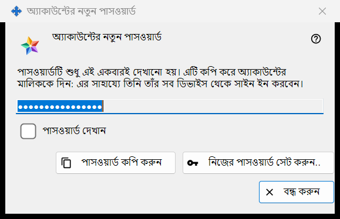
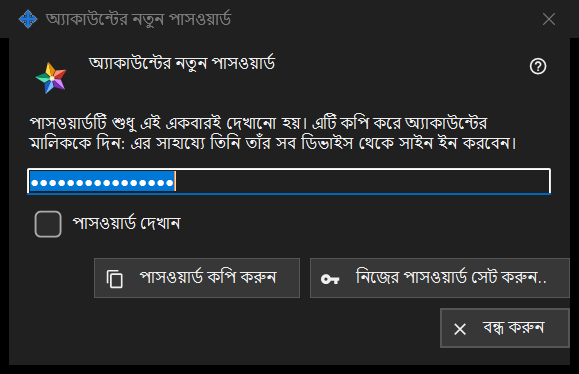

অ্যাকাউন্টের নতুন পাসওয়ার্ড
এটি কীসের জন্য
এক্সচেঞ্জ সার্ভারের একটি অ্যাকাউন্টের পাসওয়ার্ড দেখায় বা চায়, তিনটি অবস্থায়: তৈরি করা পাসওয়ার্ড, যা প্রোগ্রাম এইমাত্র বানিয়েছে, একবারই দেখানো হয় (ছবিতে এটিই আছে); লেখা পাসওয়ার্ড, যেখানে আপনার নিজের পাসওয়ার্ড চাওয়া হয়; আর সংরক্ষিত পাসওয়ার্ড, যা এই পিসিতে রাখা পাসওয়ার্ড দেখায়। এটি Share Manager-এর স্থানীয় এক্সচেঞ্জ সার্ভারের সেটিংসে অ্যাকাউন্ট যোগ করুন.., পাসওয়ার্ড রিসেট করুন.. বা শেয়ার করা পাসওয়ার্ড সেট করুন.. চাপার পর খোলে, এবং প্রশাসকের পাসওয়ার্ডের প্রশ্নগুলো থেকেও।


এই ক্রমে
- তৈরি করা পাসওয়ার্ড: পাসওয়ার্ড কপি করুন চাপুন (পড়তে চাইলে পাসওয়ার্ড দেখান-এ টিক দিন), পাসওয়ার্ডটি অ্যাকাউন্টের মালিককে দিন এবং বন্ধ করুন চাপুন।
- নিজের পাসওয়ার্ড: নিজের পাসওয়ার্ড সেট করুন.. চাপুন বা নিজে পাসওয়ার্ড লিখব বেছে নিন, নিয়ম মেনে একটি পাসওয়ার্ড লিখুন এবং পাসওয়ার্ড সংরক্ষণ করুন চাপুন।
- সংরক্ষিত পাসওয়ার্ড: অ্যাকাউন্ট বেছে নিয়ে অ্যাকাউন্টের তালিকায় পাসওয়ার্ড দেখান.. চাপুন।
উপাদানসমূহ
তৈরি করা পাসওয়ার্ড (ছবিতে)
শিরোনাম: অ্যাকাউন্টের নতুন পাসওয়ার্ড। ভূমিকায় লেখা আছে: পাসওয়ার্ডটি শুধু এই একবারই দেখানো হয়। এটি কপি করে অ্যাকাউন্টের মালিককে দিন: এর সাহায্যে তিনি তাঁর সব ডিভাইস থেকে সাইন ইন করবেন। ফিল্ডটি আড়াল করা ও শুধু পড়ার জন্য; পাসওয়ার্ড দেখান সেটি কেবল এই উইন্ডোতেই প্রকাশ করে। পাসওয়ার্ড কপি করুন একটি সুরক্ষিত পথে পাসওয়ার্ডটি ক্লিপবোর্ডে রাখে, যাতে তা Windows-এর ক্লিপবোর্ড ইতিহাসে ও ক্লাউড ক্লিপবোর্ডে না যায়, এবং উত্তর দেয়: পাসওয়ার্ড কপি হয়েছে। উইন্ডো বন্ধ হলে ফিল্ডটি খালি করে দেওয়া হয়।
কপি না করে বন্ধ করা
যে তৈরি করা পাসওয়ার্ড আপনি কপিও করেননি, দেখাননি, সেটি বন্ধ করলে প্রোগ্রাম জিজ্ঞেস করে: পাসওয়ার্ড কপি না করেই বন্ধ করবেন? এবং যোগ করে যে এটি আর দেখানো যাবে না - পরে শুধু রিসেট করা যাবে। ডিফল্ট উত্তর: না। পাসওয়ার্ডটি এই পিসিতে রাখা থাকলে কোনো প্রশ্ন করা হয় না।
নিজের পাসওয়ার্ড সেট করুন..
অ্যাকাউন্টের উইন্ডো, শেয়ার করা আমন্ত্রণ পাসওয়ার্ডের উইন্ডো এবং প্রশাসনিক পাসওয়ার্ডের উইন্ডো থেকে ব্যবহার হয়: তৈরি করা পাসওয়ার্ড না নিয়ে এই উইন্ডো বন্ধ করে এবং আবার পাসওয়ার্ড চায়, এবার আপনার নিজে লেখা পাসওয়ার্ড, যা তৈরি করাটির জায়গা নেয়।
লেখা পাসওয়ার্ড
শিরোনাম: অ্যাকাউন্টের পাসওয়ার্ড, লেবেল: পাসওয়ার্ড:, একটি আড়াল করা ফিল্ড এবং পাসওয়ার্ড দেখান। ইঙ্গিত: কমপক্ষে ১০টি অক্ষর, তার মধ্যে একটি ল্যাটিন বড় হাতের অক্ষর, একটি ছোট হাতের অক্ষর এবং একটি সংখ্যা। লেখার সময় একটি সতর্কতার লাইন বলে কী কম পড়ছে, যেমন: অন্তত একটি সংখ্যা দরকার। পাসওয়ার্ড সংরক্ষণ করুন নিয়ম না মানা পাসওয়ার্ড ফিরিয়ে দেয়; যেটি নিয়ম মানে সেটি যে উইন্ডো চেয়েছিল তাতে ফিরে যায়, এবং শেষ কথা তবু সার্ভারের।
সংরক্ষিত পাসওয়ার্ড
শিরোনামে অ্যাকাউন্টের পাসওয়ার্ড-এর সঙ্গে লগইন যোগ হয়। উইন্ডোটি এই পিসিতে রাখা পাসওয়ার্ড শুধু পড়ার জন্য দেখায়, সঙ্গে পাসওয়ার্ড দেখান ও পাসওয়ার্ড কপি করুন; বন্ধ করার সময় কিছু জিজ্ঞেস করা হয় না। এটি অ্যাকাউন্টের তালিকায় পাসওয়ার্ড দেখান.. দিয়ে খোলে, যা শুধু তখনই থাকে যখন এই পিসিতে অ্যাকাউন্টের পাসওয়ার্ড রাখুন সুইচটি চালু থাকে। সুইচটি ডিফল্টভাবে বন্ধ; চালু করার সময় আগে জিজ্ঞেস করা হয়, তারপর পাসওয়ার্ড আপনার Windows অ্যাকাউন্টের জন্য এনক্রিপ্ট করে রাখা হয়, এবং ওই অ্যাকাউন্টের অধীনে চলা যেকোনো প্রোগ্রাম তা পড়তে পারে। সুইচ চালু করার আগে সেট করা পাসওয়ার্ড রাখা হয় না।
ম্যানেজার সেটিংস · SFTP শেয়ারিং সেটিংস · এক্সচেঞ্জ সার্ভার সেটিংস